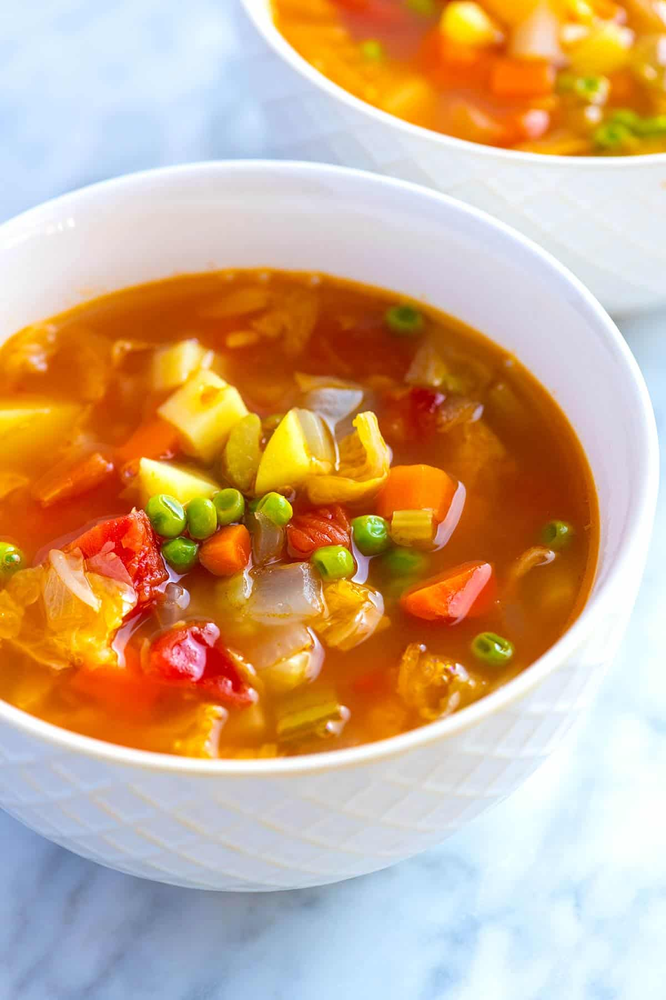

home
Vegetables soup

Description
Light and nutritious soup that is very adaptaple to whatever veggies sitting in your fridge
Ingredients
- Vegetables such as onion, carrot, celery or potato, cabbage, and peas. Fully costumizable
- Tomato paste and tomatoes
- Garlic
- Bay leaves
- Pepper flakes
- Broth
Steps
- Stir the veggies with olive oil and tomato paste. Then, stir in more flavor with garlic, fennel seeds, salt, and pepper
- Pour in the broth. Then add canned tomatoes, potato, cabbage, and bay leaves
- Simmer the soup until veggies are tender
- Toss in the peas
Dumpling Recipe
Oven Baked Fish